He’s Max by name and max by nature.
Al llegar como el competidor más joven de la historia de la Fórmula 1, con tan solo 17 años, Verstappen llevó su coche, sus rivales y los libros de récords del deporte hasta el límite. El holandés con cara de bebé y corazón de león tomó al Toro Rosso -y luego al Red Bull- por los cuernos con su estilo instintivo de carreras.
Se convirtió en el ganador más joven -a los 18 años y 228 días- con un impulso oportunista pero controlado en su debut para Red Bull en Barcelona 2016. Un verdadero corredor de rueda a rueda.
Su actitud y su dura defensa lo han llevado a veces a problemas con sus compañeros y los jefes de equipo. Pero los errores que inicialmente marcaron su potencial han dado paso a la madurez, mientras que la bravata y la energía que lo hacen un talento de éxito se han mantenido - y las victorias han seguido viniendo.
Hijo del ex piloto de F1 Jos Verstappen y de la súper rápida karting mamá Sophie Kumpen, las carreras están en sus genes. A pesar de mudarse de la casa de su papá para vivir en Mónaco, Verstappen sigue estando cerca de su familia y, aunque no teme decir lo que piensa, todavía puede ser sorprendentemente tímido.
Habiendo sido el primer campeón del mundo de los Países Bajos a la edad de 24 años, las expectativas para la nueva generación de luz líder son altísimas, pero con Verstappen hay una sensación de que el cielo es el límite.
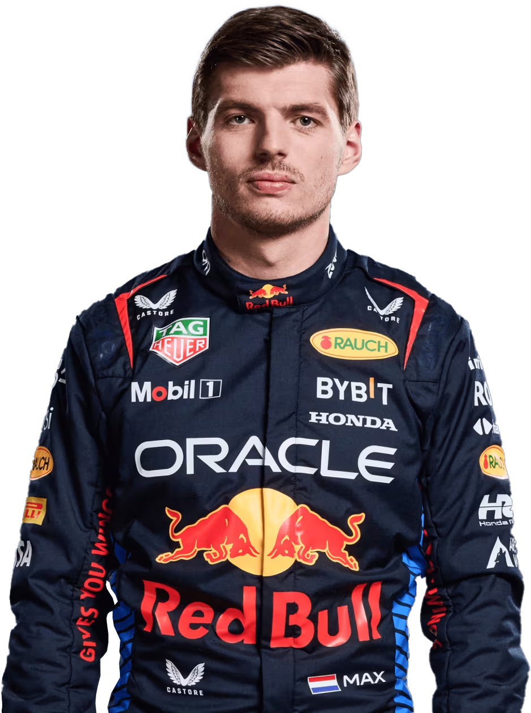 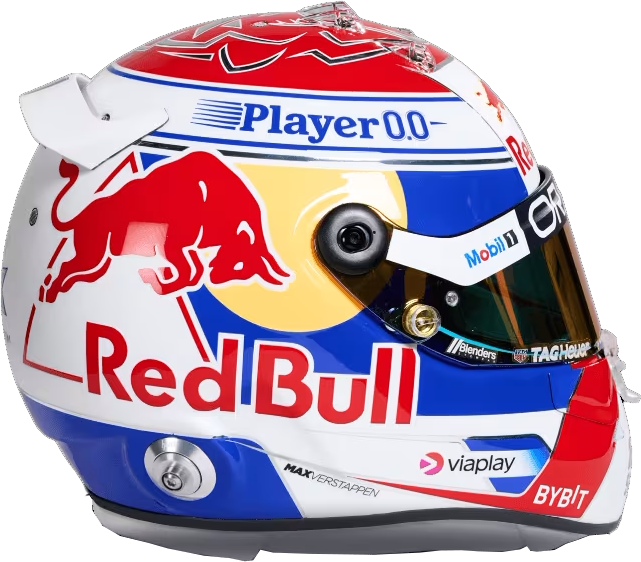He’s the fighter with a gentle touch from the land of the Lucha Libre.
La reputación de Pérez en F1 se ha construido sobre enfoques opuestos a las carreras de Gran Premio. Por un lado, es un luchador puntiagudo que se abre camino a través del grupo y en los puntos. Nunca teme añadir un poco de sabor a sus encuentros en la pista, incluso sus compañeros de equipo no siempre escapan del calor del mexicano.
Por otro lado, Pérez es un smooth operator, un maestro en la gestión de neumáticos para lograr un rendimiento extra y darle la ventaja en estrategia. Un firme favorito en la parrilla después de su tiempo con Sauber, McLaren, Force India y Racing Point, Pérez ha madurado hasta convertirse en un piloto analítico y jugador de equipo.
Un orgulloso compatriota, el pistolero de Guadalajara ha acumulado más puntos que cualquier otro mexicano en la historia de la F1. En Sakhir 2020 también igualó al héroe y compatriota Pedro Rodríguez al tomar la bandera a cuadros en primer lugar - una actuación que le consiguió un asiento con los contendientes por el título Red Bull.
Allí proporcionó un papel de apoyo a las campañas de Max Verstappen 2021/22/23, también agregando otras cinco victorias a su cuenta personal. Su propio desafío por el título puede no estar asegurado, especialmente con Verstappen como compañero de equipo, pero Pérez trabaja duro y corre con su corazón.
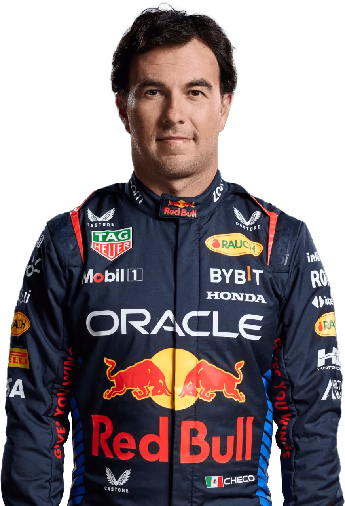 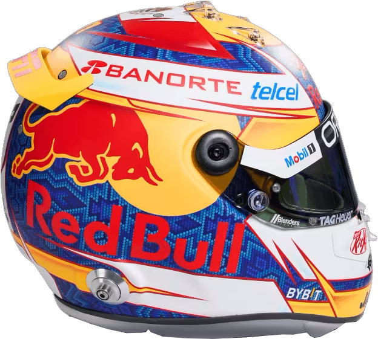'Still I Rise'
Estas son las palabras estampadas en la parte posterior del casco de Lewis Hamilton y el tatuaje en sus hombros, y desde que aniquiló las expectativas con una de las mejores actuaciones de novato en la historia de la F1 en 2007, eso es literalmente todo lo que ha hecho: Subió a la cima de la lista de pole positions de todos los tiempos por delante de su héroe Ayrton Senna, se colocó en primer lugar en la columna de victorias superando al inimitable Michael Schumacher y luego igualó los siete títulos mundiales del legendario alemán.
Es el G.O.A.T? Pocos negarían que él está en la conversación, y lo que es más, él tiene su camino, hermanando su velocidad implacable con una negativa a ajustarse a los estereotipos de cómo un piloto de carreras debe pensar, vestir o comportarse.
El respeto se gana en la F1, pero Hamilton -Sir Lewis Hamilton para ser precisos- lo tiene de todos sus compañeros. ¿Por qué? Porque saben que sea cual sea la pista, las condiciones, la situación, cuando su visor se apaga y las luces se apagan, es Hammertime.
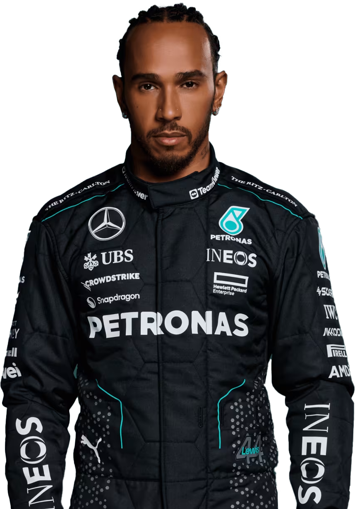 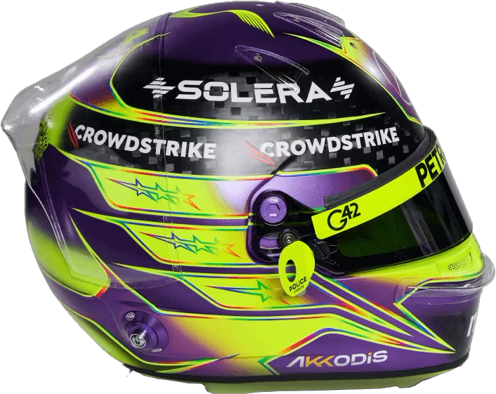He’s the driver with the motto: “If in doubt, go flat out”.
George Russell ha vivido con ello a lo largo de su carrera en la F1 hasta la fecha, superando a su compañero de equipo Robert Kubica en 21 Grandes Premios en su temporada de novato, volviendo a colocar a Williams en el podio en 2021 y consiguiendo su primera victoria con Mercedes en 2022.
Esa brillante velocidad de línea de base sirvió bien a Russell cuando acumuló títulos en su camino hacia la Fórmula 1. El británico irrumpió en el campeonato de GP3 2017 y entregó la corona de Fórmula 2 2018 bajo una inmensa presión.
Viendo su potencial, los campeones del mundo Mercedes lo contrataron para su programa junior en 2017, cuando Russell ya tenía un contrato DTM sobre la mesa. Acumuló más experiencia con las sesiones de práctica con Force India y las pruebas para las Flechas de Plata, antes de aterrizar su Williams de carreras con motor Mercedes.
Una negativa a ceder terreno a sus rivales -y el compromiso de un pase complicado- sustenta la mentalidad ganadora de Russell. Y es lo que le llevó a la llamada para reemplazar a Lewis Hamilton por una aparición única de Mercedes en Sakhir 2020 cuando el campeón reinante fue golpeado por Covid-19.
Ese giro estelar vio a Russell perder el pole por solo 0.026s y luego superar al valeroso de Mercedes Valtteri Bottas. Solo una parada en boxes defectuosa y un pinchazo a punto de ruptura impidieron una victoria casi segura para el submarinista emergente.
Mantuvo su cabeza baja en Williams en 2021, anotando sus primeros puntos y podio, mientras mantenía su ojo en el premio más grande. Habiendo demostrado ser un corredor duro y un talento tenaz, ese premio llegó en forma de una oportunidad para enfrentarse a su compatriota y siete veces campeón Hamilton en una maquinaria idéntica.
Fue una oportunidad que Russell ha disfrutado, y obtuvo su primera victoria en la F1- y la única victoria de Mercedes en 2022, en Brasil. La temporada 2023 resultó más dura, pero si las Silver Arrows pueden recuperarse y proporcionar un automóvil verdaderamente competitivo, una oferta por el título seguramente se acerca. Un gran desafío, pero como siempre, 'Russell el cohete' va a ir a toda máquina.
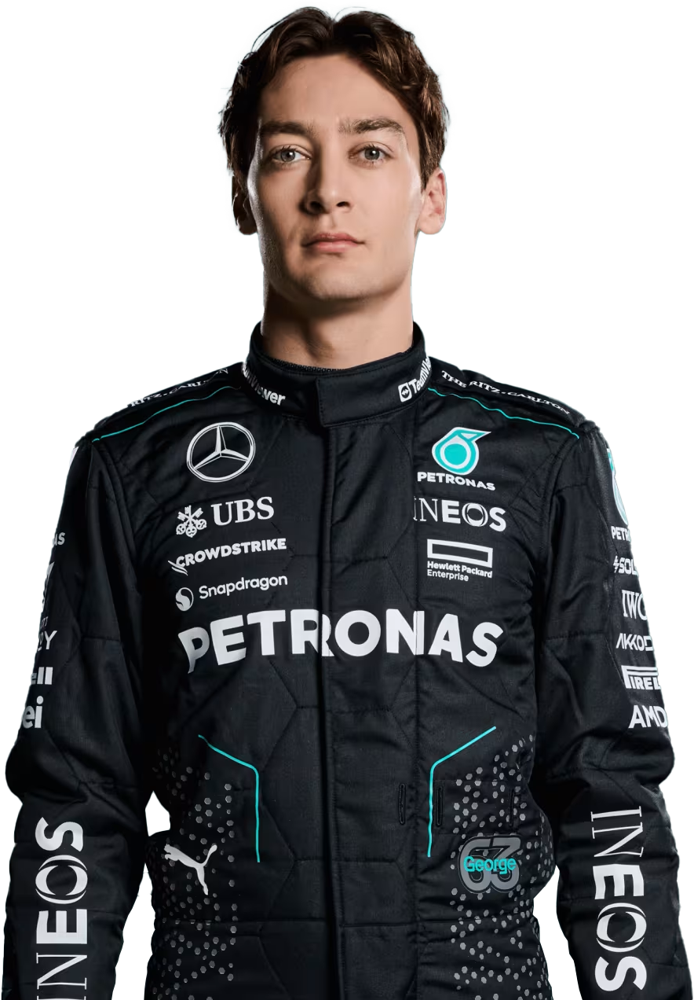 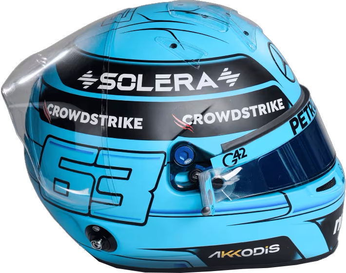Born in the Mediterranean idyll of Monaco, Leclerc arrived in F1 on a tidal wave of expectation.
Prácticamente inigualable en su camino a las coronas de la GP3 y la Fórmula 2, mostró una deslumbrante gama de habilidades desde posiciones de pole position, victorias de mando -incluso cuando su coche se incendió dos veces en Silverstone- hasta una capacidad para muscularse a través del paquete. Ganar campeonatos consecutivos también le enseñó a Leclerc cómo manejar la presión, otra herramienta útil en el gran estanque de las carreras de Fórmula 1.
Avanzando hacia la F1 en 2018, Leclerc mostró destellos de ritmo balístico los sábados y brillantez de carreras los domingos, llevando a su Sauber más allá de sus límites, y ganando un asiento que el-dinero-no-compra en Ferrari para 2019, poniéndose en la piel del último campeón mundial de la Scuderia, Kimi Raikkonen.
Allí inmediatamente puso al gato entre los proverbiales palomas, sin miedo a ir rueda-a-rueda con el establecido número uno, Sebastian Vettel. Una primera victoria en F1 en Spa fue seguida por otra una semana después en el sagrado territorio de Ferrari, Monza. Los tifosi habían encontrado otro nuevo héroe, que luego se convirtió en el primer hombre en superar a Vettel en una temporada con la Scuderia, una hazaña que repitió de manera aplastante al año siguiente.
Las temporadas 2020 y '21 dieron pocos frutos para Ferrari, pero Leclerc mantuvo su determinación de emerger como un verdadero contendiente por el título en 2022. Con tres victorias, 11 podios y nueve pole positions, fue el único hombre capaz de luchar consistentemente contra el campeón Max Verstappen. Una hazaña que él y la Scuderia no pudieron repetir en 2023.
Fuera del coche, Leclerc es modesto y considerado, pero entonces él está en su propia misión muy personal. Este joven talento está compitiendo por su difunto padre Herve y su amigo y mentor Jules Bianchi, el piloto de F1 que murió en 2015.
En la evidencia hasta ahora, él está haciendo a ambos sentirse orgullosos.
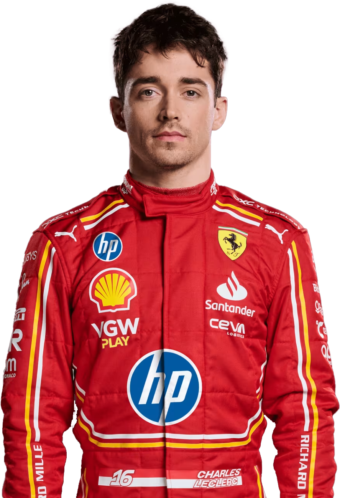 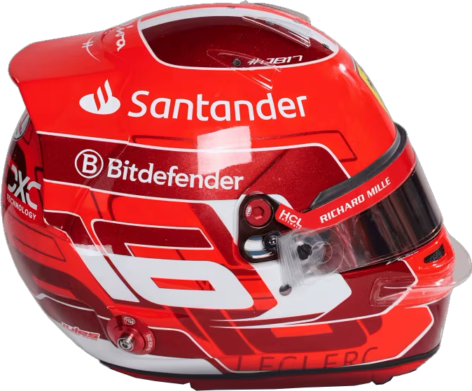He’s the matador from Madrid racing royalty.
Después de entrar en el circuito de F1 junto a Max Verstappen en Toro Rosso en 2015, Sainz mostró rápidamente su espíritu luchador. Un tenaz corredor, pone el coche en el borde mientras se apresura a través del paquete. No es de extrañar que Sainz se haya ganado el apodo Chilli.
Pero el español es inteligente, así como instintivo, pensando su camino a través de una carrera y en los puntos. Este temperamento tranquilo lo sigue fuera de la pista donde permanece inalterado por las presiones de forjar una carrera en el Gran Premio con un nombre famoso.
Sainz es el hijo del doble campeón del mundo de rally, también su homónimo, y ha traído algunas de las habilidades de conducción de papá al circuito de F1 -junior ama una deliciosa dosis de drift para uno.
Después de seguir las huellas de neumáticos de su famoso padre, Sainz ha tenido grandes botas de carreras para llenar - primero en McLaren donde reemplazó a su héroe de la infancia Fernando Alonso, y ahora en Ferrari, en el asiento anteriormente propiedad de Sebastian Vettel.
Nunca es fácil vivir a la sombra de los gigantes deportivos, pero Sainz ha demostrado el impulso y la disposición para lidiar con ello - ha logrado una victoria en el Gran Premio en ambas temporadas de su Scuderia hasta la fecha. Vamos!
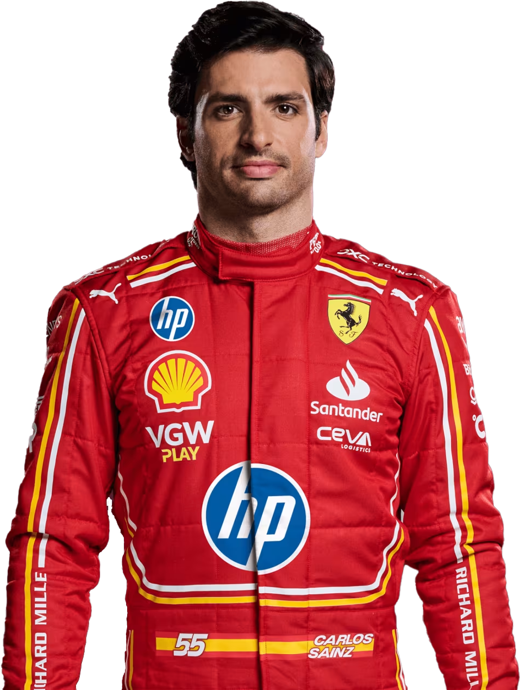 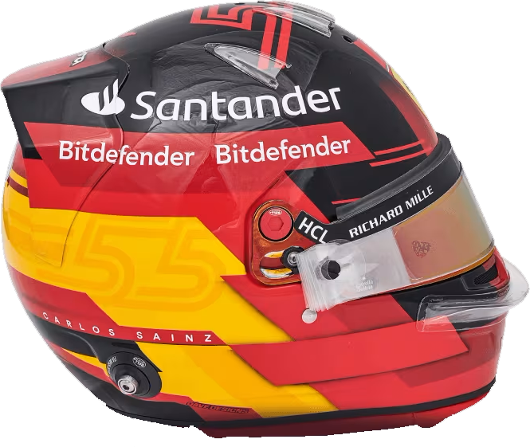